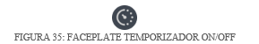
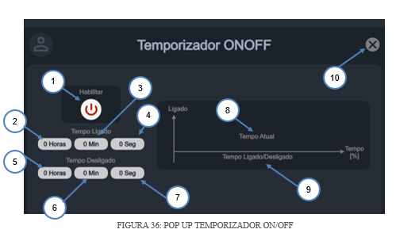
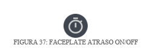
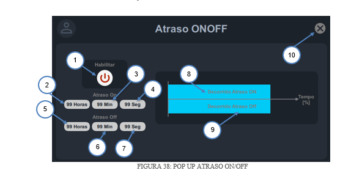

6.1 TEMPORIZADOR ON/OFF
A popup de temporizador ON/OFF se refere a uma configuração adicional para alguns equipamentos (motores, inversores e válvulas) que necessitam operar por um tempo determinado e posteriormente ficarem desligados por mais um período de tempo.
Voltar ao menu6.1.1 FACEPLATE

Para cada equipamento no sistema que possuir a configuração de temporizador, existirá um símbolo próximo do mesmo, o qual é mostrado na FIGURA 35. Ao clicar nesse símbolo, será aberta a popup do temporizador.

Na FIGURA 36 é mostrada a popup com suas configurações.
Voltar ao menu6.1.2 OPERAÇÃO
ÍCONES POP UP TEMPORIZADOR ON/OFF
| ITEM | DESCRIÇÃO |
|---|---|
| 1 | Botão que habilita o temporizador. |
| 2 | Campo para definir o total de horas ligado. |
| 3 | Campo para definir o total de minutos ligado. |
| 4 | Campo para definir o total de segundos ligado. |
| 5 | Campo para definir o total de horas desligado. |
| 6 | Campo para definir o total de minutos desligado. |
| 7 | Campo para definir o total de segundos desligado. |
| 8 | Barra lateral que indica o percentual de tempo ligado e desligado. A parte da barra com a cor do fundo indica o tempo desligado, enquanto a parte azul indica o tempo ligado. |
| 9 | Indica o tempo decorrido de acionamento e desacionamento do equipamento. A barra na cor azul avança proporcionalmente ao tempo decorrido. |
| 10 | Botão para fechar a popup. |
TABELA 36: ÍCONES POP UP TEMPORIZADOR ON/OFF
Voltar ao menu7.1 ATRASO ON/OFF
A popup de atraso ON/OFF se refere a uma configuração adicional para alguns equipamentos (motores, inversores e válvulas) que necessitam de um retardo em seu desligamento ou em sua ativação.
Voltar ao menu7.1.1 FACEPLATE

Para cada equipamento no sistema que possuir a configuração de atraso, existirá um símbolo próximo do mesmo, o qual é mostrado na FIGURA 37. Ao clicar nesse símbolo, será aberta a popup do atraso ON/OFF.

Na FIGURA 38 é mostrada a popup com suas configurações.
Voltar ao menu7.1.2 OPERAÇÃO
ÍCONES POP UP ATRASO ON/OFF
| ITEM | DESCRIÇÃO |
|---|---|
| 1 | Botão que habilita o temporizador. |
| 2 | Campo para definir o total de horas de retardo para ligar. |
| 3 | Campo para definir o total de minutos de retardo para ligar. |
| 4 | Campo para definir o total de segundos de retardo para ligar. |
| 5 | Campo para definir o total de horas de retardo para desligar. |
| 6 | Campo para definir o total de minutos de retardo para desligar. |
| 7 | Campo para definir o total de segundos de retardo para desligar. |
| 8 | Barra lateral que indica o percentual do tempo de retardo de acionamento decorrido. |
| 9 | Barra lateral que indica o percentual do tempo de retardo de desacionamento decorrido. |
| 10 | Botão para fechar a popup. |
TABELA: ÍCONES POP UP ATRASO ON/OFF
Voltar ao menu